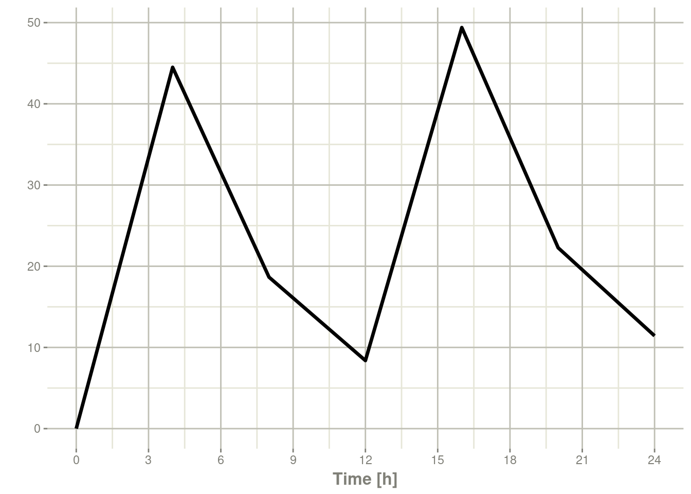
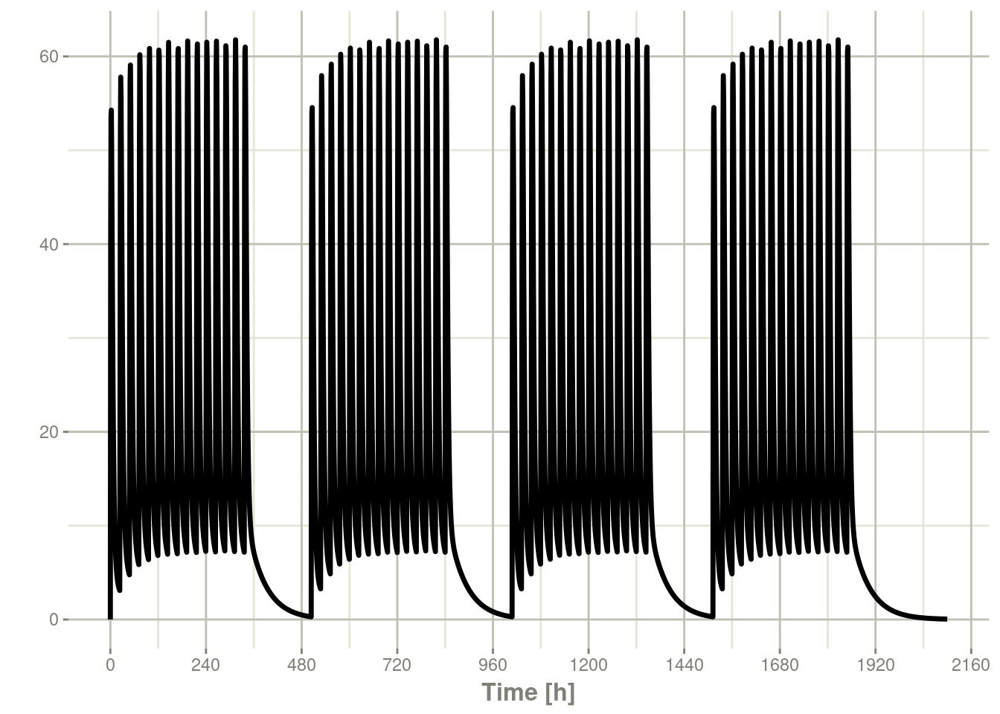
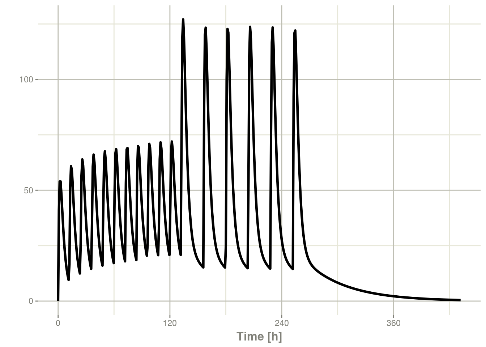

第八章轻松创建rxode2事件
rxode2中的事件表是一个专门的数据框，充当rxode2的所有事件和观测时间的容器。
要创建rxode2事件表，可以使用代码eventTable()， et()，甚至可以自己直接使用数据框创建事件表，自己直接使用数据框创建事件表时应确保其中包含正确事件信息。这与rxode2支持的事件类型密切相关。
library(rxode2)
library(units)#> udunits database from /usr/share/xml/udunits/udunits2.xml(ev <- eventTable())#> ── EventTable with 0 records ──
#> 0 dosing records (see x$get.dosing(); add with add.dosing
#> or et)
#> 0 observation times (see x$get.sampling(); add with
#> add.sampling or et)或者
(ev <- et())#> ── EventTable with 0 records ──
#> 0 dosing records (see x$get.dosing(); add with add.dosing
#> or et)
#> 0 observation times (see x$get.sampling(); add with
#> add.sampling or et)使用此事件表，您可以通过管道或直接访问此事件表向其中添加采样/观测或给药记录。
下表列出了用于创建给药记录的两个主要函数
| add.dosing()函数 | et()函数 | 描述 |
|---|---|---|
| dose | amt | 给药的药量 |
| nbr.doses | addl | 额外附加的给药次数 |
| dosing.interval | ii | 给药间隔 |
| dosing.to | cmt | 给药房室 |
| rate | rate | 输注速率 |
| start.time | time | 给药开始时间 |
| dur | 输注持续是擦汗给你 |
采样时间可以通过add.sampling(采样时间)或 et(采样时间)添加。给药时间窗和采样时间窗也是支持。
对于这些模型，我们可以使用rxode2教程中分享的模型来说明：
## Model from rxode2 tutorial
m1 <-rxode2({
KA=2.94E-01;
CL=1.86E+01;
V2=4.02E+01;
Q=1.05E+01;
V3=2.97E+02;
Kin=1;
Kout=1;
EC50=200;
## Added modeled bioavaiblity, duration and rate
fdepot = 1;
durDepot = 8;
rateDepot = 1250;
C2 = centr/V2;
C3 = peri/V3;
d/dt(depot) =-KA*depot;
f(depot) = fdepot
dur(depot) = durDepot
rate(depot) = rateDepot
d/dt(centr) = KA*depot - CL*C2 - Q*C2 + Q*C3;
d/dt(peri) = Q*C2 - Q*C3;
d/dt(eff) = Kin - Kout*(1-C2/(EC50+C2))*eff;
eff(0) = 1
})8.1向事件表添加给药
事件表一旦创建，您就可以通过add.dosing()和et()函数将给药添加到事件表 。
使用 add.dosing()函数时您需要:
| 所需的参数 | 含义用途 |
|---|---|
| dose | 给药的药量 |
| nbr.doses | 给药次数;至少是1. |
| dosing.interval | 给药间隔;默认为24. |
| dosing.to | 给药的房室. |
| rate | 输注速率 |
| start.time | 给药开始的时间 |
ev <- eventTable(amount.units="mg", time.units="hr")
## The methods ar attached to the event table, so you can use
## them directly
ev$add.dosing(dose=10000, nbr.doses = 3)# loading doses
## Starts at time 0; Default dosing interval is 24
## You can also pipe the event tables to these methods.
ev <- ev %>%
add.dosing(dose=5000, nbr.doses=14,
dosing.interval=12)# maintenance
ev#> ── EventTable with 2 records ──
#> 2 dosing records (see x$get.dosing(); add with add.dosing
#> or et)
#> 0 observation times (see x$get.sampling(); add with
#> add.sampling or et)
#> multiple doses in `addl` columns, expand with x$expand();
#> or etExpand(x)
#> ── First part of x: ──
#> # A tibble: 2 × 5
#> time amt ii addl evid
#> [h] [mg] [h] <int> <evid>
#> 1 0 10000 24 2 1:Dose (Add)
#> 2 0 5000 12 13 1:Dose (Add)请注意，单位已在表中指定。指定后，单位将使用unitsR添加包追踪单位，并在需要时进行转换。此外，ggforce使用它们来标记 ggplot坐标轴。对设置和删除rxode2事件表的单位时可以使用set_units和drop_units函数。【译者注：我在自己本地环境，开始时无法实现原作者描述的对单位的修改，在重新R后，上述对单位的修改可以实现了，所以在新手初次尝试示例前最后重启一次R，以确保案例可重现】
在此示例中，您可以看到时间坐标轴标记出了单位：
rxSolve(m1, ev) %>% plot(C2)
如果您更熟悉NONMEM/rxode2事件记录，您还可以直接使用带有dose元素的et指定给药:
ev <- et(timeUnits="hr") %>%
et(amt=10000, until = set_units(3, days),
ii=12) # loading doses
ev#> ── EventTable with 1 records ──
#> 1 dosing records (see x$get.dosing(); add with add.dosing
#> or et)
#> 0 observation times (see x$get.sampling(); add with
#> add.sampling or et)
#> multiple doses in `addl` columns, expand with x$expand();
#> or etExpand(x)
#> ── First part of x: ──
#> # A tibble: 1 × 5
#> time amt ii addl evid
#> [h] <dbl> [h] <int> <evid>
#> 1 0 10000 12 6 1:Dose (Add)其中给出：
rxSolve(m1, ev) %>% plot(C2)
这显示出了创建事件表是多么的容易。
8.2 将采样添加到事件表
上面的示例如果您注意看会发现，rxode2生成了一些默认的采样时间，这因为没有任何采样时间。如果希望对采样时间进行更多控制，则应通过add.sampling或et将采样添加到rxode2的事件表中
ev <- eventTable(amount.units="mg", time.units="hr")
## The methods ar attached to the event table, so you can use them
## directly
ev$add.dosing(dose=10000, nbr.doses = 3)# loading doses
ev$add.sampling(seq(0,24,by=4))
ev#> ── EventTable with 8 records ──
#> 1 dosing records (see x$get.dosing(); add with add.dosing
#> or et)
#> 7 observation times (see x$get.sampling(); add with
#> add.sampling or et)
#> multiple doses in `addl` columns, expand with x$expand();
#> or etExpand(x)
#> ── First part of x: ──
#> # A tibble: 8 × 5
#> time amt ii addl evid
#> [h] [mg] [h] <int> <evid>
#> 1 0 NA NA NA 0:Observation
#> 2 0 10000 24 2 1:Dose (Add)
#> 3 4 NA NA NA 0:Observation
#> 4 8 NA NA NA 0:Observation
#> 5 12 NA NA NA 0:Observation
#> 6 16 NA NA NA 0:Observation
#> 7 20 NA NA NA 0:Observation
#> 8 24 NA NA NA 0:Observation上述代码将给出：
solve(m1, ev) %>% plot(C2)
或者，如果您也可以使用et，您可以简单地以与add.sampling类似的方式添加它们：
ev <- et(timeUnits="hr") %>%
et(amt=10000, until = set_units(3, days),
ii=12) %>% # loading doses
et(seq(0,24,by=4))
ev#> ── EventTable with 8 records ──
#> 1 dosing records (see x$get.dosing(); add with add.dosing
#> or et)
#> 7 observation times (see x$get.sampling(); add with
#> add.sampling or et)
#> multiple doses in `addl` columns, expand with x$expand();
#> or etExpand(x)
#> ── First part of x: ──
#> # A tibble: 8 × 5
#> time amt ii addl evid
#> [h] <dbl> [h] <int> <evid>
#> 1 0 NA NA NA 0:Observation
#> 2 0 10000 12 6 1:Dose (Add)
#> 3 4 NA NA NA 0:Observation
#> 4 8 NA NA NA 0:Observation
#> 5 12 NA NA NA 0:Observation
#> 6 16 NA NA NA 0:Observation
#> 7 20 NA NA NA 0:Observation
#> 8 24 NA NA NA 0:Observationrxode2求解后上述代码将给出以下：
solve(m1, ev) %>% plot(C2)
请注意这些图的锯齿状性质，这是因为仅有几个采样时间。
8.3将事件表展开为多个个体的事件表。
展开事件表唯一需要的是要展开的ID列表；
ev <- et(timeUnits="hr") %>%
et(amt=10000, until = set_units(3, days),
ii=12) %>% # loading doses
et(seq(0,48,length.out=200)) %>%
et(id=1:4)
ev#> ── EventTable with 804 records ──
#> 4 dosing records (see x$get.dosing(); add with add.dosing
#> or et)
#> 800 observation times (see x$get.sampling(); add with
#> add.sampling or et)
#> multiple doses in `addl` columns, expand with x$expand();
#> or etExpand(x)
#> ── First part of x: ──
#> # A tibble: 804 × 6
#> id time amt ii addl evid
#> <int> [h] <dbl> [h] <int> <evid>
#> 1 1 0 NA NA NA 0:Observation
#> 2 1 0 10000 12 6 1:Dose (Add)
#> 3 1 0.241 NA NA NA 0:Observation
#> 4 1 0.482 NA NA NA 0:Observation
#> 5 1 0.724 NA NA NA 0:Observation
#> 6 1 0.965 NA NA NA 0:Observation
#> 7 1 1.21 NA NA NA 0:Observation
#> 8 1 1.45 NA NA NA 0:Observation
#> 9 1 1.69 NA NA NA 0:Observation
#> 10 1 1.93 NA NA NA 0:Observation
#> # … with 794 more rows您可以在以下模拟中看到有4个个体被求解：
set.seed(42)
rxSetSeed(42)
solve(m1, ev,
params=data.frame(KA=0.294*exp(rnorm(4)),
18.6*exp(rnorm(4)))) %>%
plot(C2)8.4在采样窗口内添加给药和采样
除了添加固定给药和固定采样时间之外，您还可以设置采样和给药的时间窗口。对于给药时间窗，您可以在time参数(时间参数)中指定，此时将time指定为一个list列表，该list中包含有一个有序数字向量，向量中含有两个元素，分别表示给药时间的下限和给药时间窗的上限【译者注：比如time=list(c(0,6))，当于计划给药时间为t时，此时的时间窗为[t+0,t+6]】。
对于给药时间窗的示例，您从给药时间的给药时间窗为6小时的示例开始，示例如下：
set.seed(42)
rxSetSeed(42)
ev <- et(timeUnits="hr") %>%
et(time=list(c(0,6)), amt=10000, until = set_units(2, days),
ii=12) %>% # loading doses
et(id=1:4)
ev#> ── EventTable with 16 records ──
#> 16 dosing records (see x$get.dosing(); add with add.dosing
#> or et)
#> 0 observation times (see x$get.sampling(); add with
#> add.sampling or et)
#> ── First part of x: ──
#> # A tibble: 16 × 6
#> id low time high amt evid
#> <int> [h] [h] [h] <dbl> <evid>
#> 1 1 0 5.49 6 10000 1:Dose (Add)
#> 2 1 12 17.0 18 10000 1:Dose (Add)
#> 3 1 24 25.7 30 10000 1:Dose (Add)
#> 4 1 36 41.6 42 10000 1:Dose (Add)
#> 5 2 0 4.31 6 10000 1:Dose (Add)
#> 6 2 12 14.7 18 10000 1:Dose (Add)
#> 7 2 24 28.2 30 10000 1:Dose (Add)
#> 8 2 36 39.9 42 10000 1:Dose (Add)
#> 9 3 0 0.808 6 10000 1:Dose (Add)
#> 10 3 12 16.4 18 10000 1:Dose (Add)
#> 11 3 24 27.1 30 10000 1:Dose (Add)
#> 12 3 36 39.9 42 10000 1:Dose (Add)
#> 13 4 0 4.98 6 10000 1:Dose (Add)
#> 14 4 12 13.7 18 10000 1:Dose (Add)
#> 15 4 24 29.6 30 10000 1:Dose (Add)
#> 16 4 36 41.5 42 10000 1:Dose (Add)在下面的模拟中，您可以清楚地看到不同的剂量时间窗：
ev <- ev %>% et(seq(0,48,length.out=200))
solve(m1, ev,
params=data.frame(KA=0.294*exp(rnorm(4)),
18.6*exp(rnorm(4)))) %>%
plot(C2)
当然，在现实中，给药时间窗可能只有2小时：
set.seed(42)
rxSetSeed(42)
ev <- et(timeUnits="hr") %>%
et(time=list(c(0,2)), amt=10000, until = set_units(2, days),
ii=12) %>% # loading doses
et(id=1:4) %>%
et(seq(0,48,length.out=200))
solve(m1, ev,
params=data.frame(KA=0.294*exp(rnorm(4)),
18.6*exp(rnorm(4)))) %>%
plot(C2)
同样的事情可以用于指定采样的采样时间。要以采样时间窗的形式指定采样时间，您可以创建采样时间列表。其中的每个采样时间将是一个list列表，list中是一个含有两个元素的有序的数字向量。
rxSetSeed(42)
set.seed(42)
ev <- et(timeUnits="hr") %>%
et(time=list(c(0,2)), amt=10000, until = set_units(2, days),
ii=12) %>% # loading doses
et(id=1:4)
## Create 20 samples in the first 24 hours and 20 samples in the
## second 24 hours
## 在第一个24小时内，创建20个采样；在第二个24小时内，创建20个采
## 【译者注：即在第一个24小时内，随机20次采样，因为前个采样的时间窗都是[0,24]】
samples <- c(lapply(1:20, function(...){c(0,24)}),
lapply(1:20, function(...){c(20,48)}))
## Add the random collection to the event table
## 将随机采样添加到事件表中
ev <- ev %>% et(samples)
library(ggplot2)
solve(m1, ev, params=data.frame(KA=0.294*exp(rnorm(4)),
18.6*exp(rnorm(4)))) %>%
plot(C2) + geom_point()
这显示了rxode2事件表允许的给药和采样的灵活性。
8.6按序列组合事件表
组合事件表的一种方法是通过c、seq或 etSeq按序列进行组合。这需要两个给药组，并在它们之间加上至少一个给药间隔:：
## bid for 5 days
bid <- et(timeUnits="hr") %>%
et(amt=10000,ii=12,until=set_units(5, "days"))
## qd for 5 days
qd <- et(timeUnits="hr") %>%
et(amt=20000,ii=24,until=set_units(5, "days"))
## bid for 5 days followed by qd for 5 days
et <- seq(bid,qd) %>% et(seq(0,11*24,length.out=100));
rxSolve(m1, et) %>% plot(C2)在对事件按序列组合时，您还可以在此序列插入一段时间将前后两个分隔开;例如，如果你想以一周为间隔，你可以用下面的事件表序列轻松地做到这一点:
## bid for 5 days followed by qd for 5 days
et <- seq(bid,set_units(1, "week"), qd) %>%
et(seq(0,18*24,length.out=100));
rxSolve(m1, et) %>% plot(C2)
请注意，在本例中，bid和qd事件表之间的时间正好是一周，而不是一周加24小时，因为存在给药间隔时间。如果你想要这种行为，你可以在按序列组合时使用wait="+ii"。【译者注：不要怀疑你没有看懂，因为我在本地测试，发现添加wait=“+ii”后毫无变化，无论在两个事件表格间插入1还是插入13，都无变化，怀疑是一个bug；因为是否使用wait=“+ii”，其行为都与默认的samrt方式一样】
## bid for 5 days followed by qd for 5 days
et <- seq(bid,set_units(1, "week"), qd,wait="+ii") %>%
et(seq(0,18*24,length.out=100));
rxSolve(m1, et) %>% plot(C2)还要注意的是，rxode2假定您希望按照给药来分隔事件表，并在组合事件表时清除所有采样记录。如果不是这样，您还可以使用选项samples="use"
8.7通过对事件表重复组合事件表
您可以使用etRep或rep重复事件表。 例如，可以为期2周的QD治疗和1周的休息治疗为一轮，一共重复4论，这样的治疗方案可以简单地指定出来：
qd <-et(timeUnits = "hr") %>%
et(amt=10000, ii=24, until=set_units(2, "weeks"), cmt="depot")
et <- rep(qd, times=4, wait=set_units(1,"weeks")) %>%
add.sampling(set_units(seq(0, 12.5,by=0.005),weeks))
rxSolve(m1, et) %>% plot(C2)
这是使用事件表按序列组合的一种简化方法。 因此，许多相同的选项仍然适用；也就是说，除非使用samples="use"，否则samples将被清除，事件表之间的时间至少是给药间隔。你可以通过wait选项来调整时间 。
8.8 使用rbind组合事件表
您可以将事件表与rbind结合使用。这在组合事件表时不考虑事件的时间，而是保持它们相同的时间。如果你用等待时间间隔事件表，则它再不考虑给药间隔。
使用前面的seq，您可以清楚地看到他们两个之间的差异。以下是采用按序列组合时间表:
## bid for 5 days
bid <- et(timeUnits="hr") %>%
et(amt=10000,ii=12,until=set_units(5, "days"))
## qd for 5 days
qd <- et(timeUnits="hr") %>%
et(amt=20000,ii=24,until=set_units(5, "days"))
et <- seq(bid,qd) %>%
et(seq(0,18*24,length.out=500));
rxSolve(m1, et) %>% plot(C2)
但是如果你把它们通过rbind组合
## bid for 5 days
et <- rbind(bid,qd) %>%
et(seq(0,18*24,length.out=500));
rxSolve(m1, et) %>% plot(C2)
仍然适用等待期（但不考虑剂量间隔）
et <- rbind(bid,wait=set_units(10,days),qd) %>%
et(seq(0,18*24,length.out=500));
rxSolve(m1, et) %>% plot(C2)
您还可以将这些表绑定在一起，并使事件表中的每个ID唯一；这可以很好地将具有不同预期剂量和采样时间的队列组合起来。这需要id="unique"选项;使用第一个例子可以显示出在这种情况下这是如何不同的:
## bid for 5 days
et <- etRbind(bid,qd, id="unique") %>%
et(seq(0,150,length.out=500));
library(ggplot2)
rxSolve(m1, et) %>% plot(C2) + facet_wrap( ~ id)
8.9展开事件
可以将事件表展开，使其将由addl折叠为一行的记录展开为多行记录，如下例所示：
ev <- et() %>%
et(dose=50, ii=8, until=48)
ev#> ── EventTable with 1 records ──
#> 1 dosing records (see x$get.dosing(); add with add.dosing
#> or et)
#> 0 observation times (see x$get.sampling(); add with
#> add.sampling or et)
#> multiple doses in `addl` columns, expand with x$expand();
#> or etExpand(x)
#> ── First part of x: ──
#> # A tibble: 1 × 5
#> time amt ii addl evid
#> <dbl> <dbl> <dbl> <int> <evid>
#> 1 0 50 8 6 1:Dose (Add)您可以通过$expand()或etExpand(ev)来展开事件，使其不再包含addl项:
第一种方式，etExpand(ev)在不修改原始数据帧的情况下展开事件表:
etExpand(ev)#> ── EventTable with 7 records ──
#> 7 dosing records (see x$get.dosing(); add with add.dosing
#> or et)
#> 0 observation times (see x$get.sampling(); add with
#> add.sampling or et)
#> ── First part of x: ──
#> # A tibble: 7 × 4
#> time amt ii evid
#> <dbl> <dbl> <dbl> <evid>
#> 1 0 50 0 1:Dose (Add)
#> 2 8 50 0 1:Dose (Add)
#> 3 16 50 0 1:Dose (Add)
#> 4 24 50 0 1:Dose (Add)
#> 5 32 50 0 1:Dose (Add)
#> 6 40 50 0 1:Dose (Add)
#> 7 48 50 0 1:Dose (Add)我们可以看到addl事件被展开了，但是原始数据帧保持不变:
print(ev)#> ── EventTable with 1 records ──
#> 1 dosing records (see $get.dosing(); add with add.dosing or
#> et)
#> 0 observation times (see $get.sampling(); add with
#> add.sampling or et)
#> multiple doses in `addl` columns, expand with $expand(); or
#> etExpand()
#> ── First part of : ──
#> # A tibble: 1 × 5
#> time amt ii addl evid
#> <dbl> <dbl> <dbl> <int> <evid>
#> 1 0 50 8 6 1:Dose (Add)第二种方式，如果您使用ev$expand()展开，它将修改ev对象。这是类似于面向对象的方法：
ev$expand()
ev#> ── EventTable with 7 records ──
#> 7 dosing records (see x$get.dosing(); add with add.dosing
#> or et)
#> 0 observation times (see x$get.sampling(); add with
#> add.sampling or et)
#> ── First part of x: ──
#> # A tibble: 7 × 4
#> time amt ii evid
#> <dbl> <dbl> <dbl> <evid>
#> 1 0 50 0 1:Dose (Add)
#> 2 8 50 0 1:Dose (Add)
#> 3 16 50 0 1:Dose (Add)
#> 4 24 50 0 1:Dose (Add)
#> 5 32 50 0 1:Dose (Add)
#> 6 40 50 0 1:Dose (Add)
#> 7 48 50 0 1:Dose (Add)